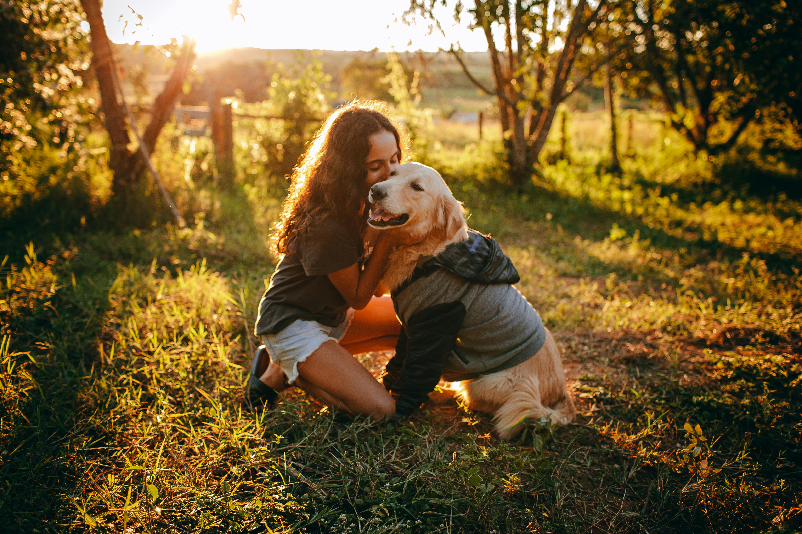
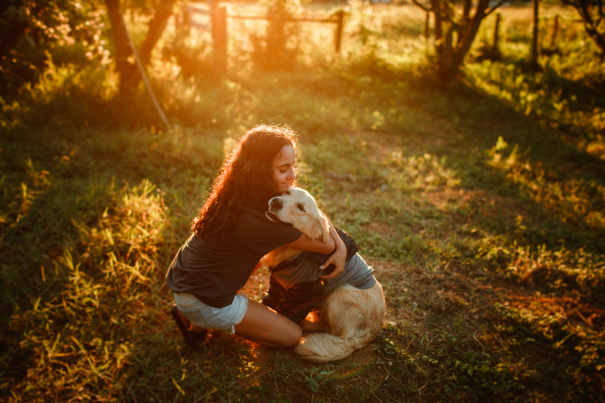
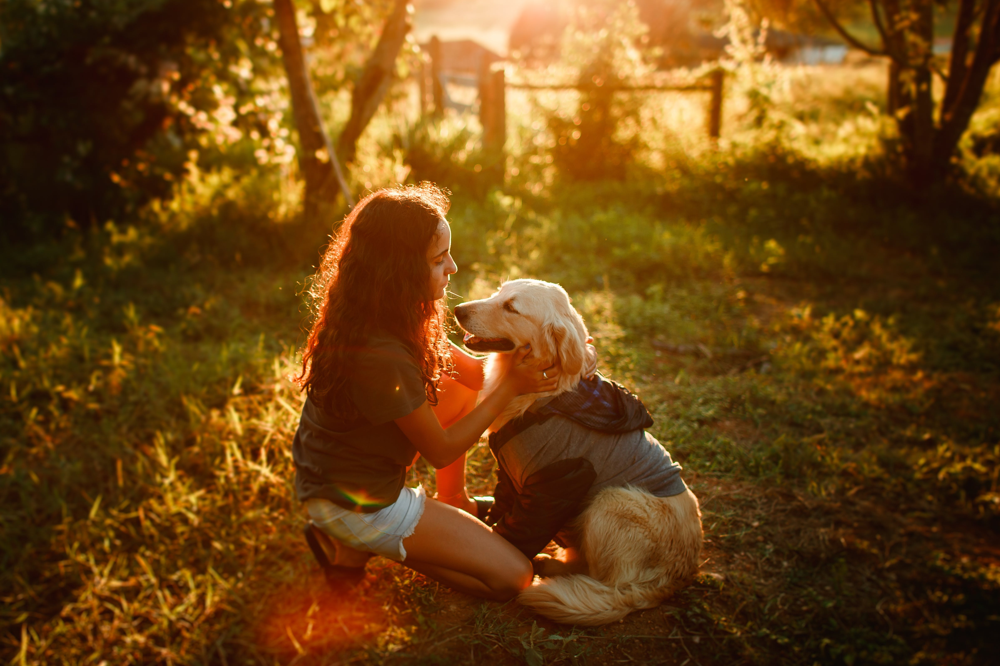
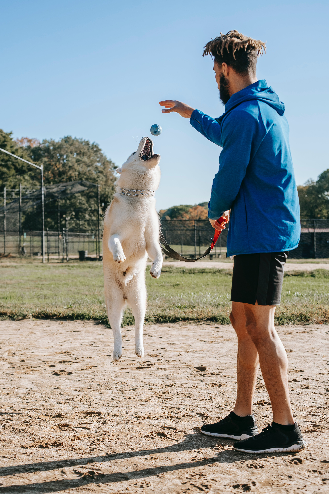
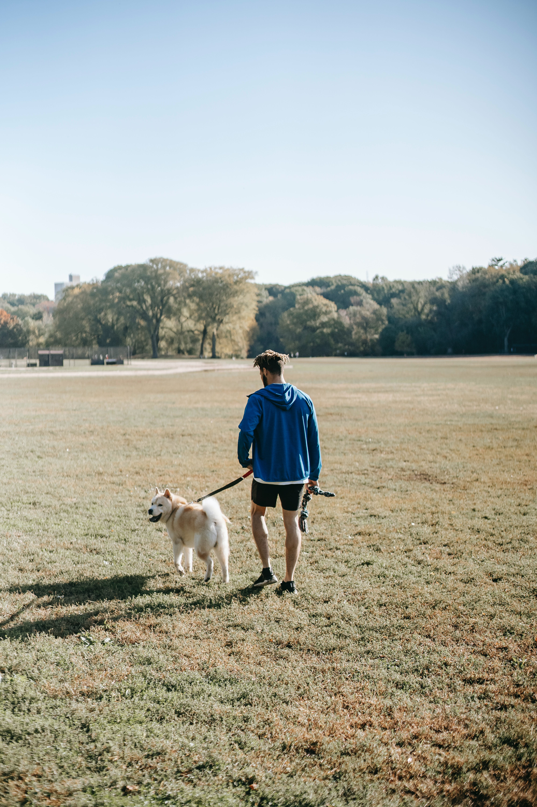
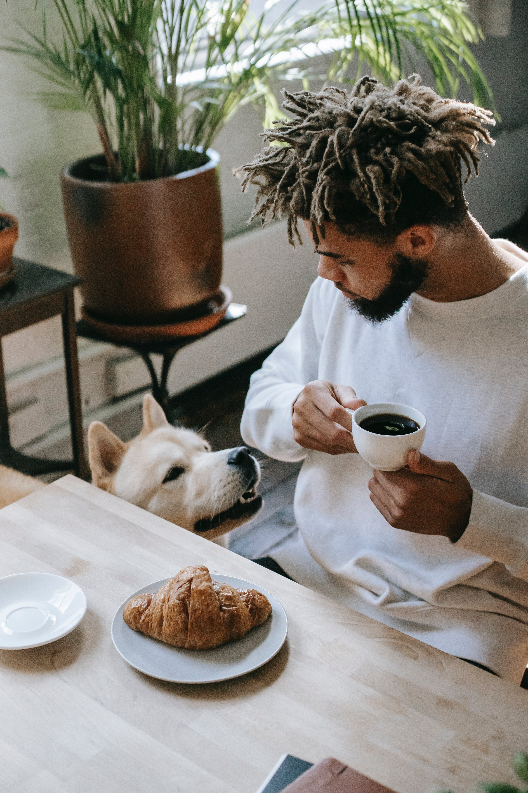
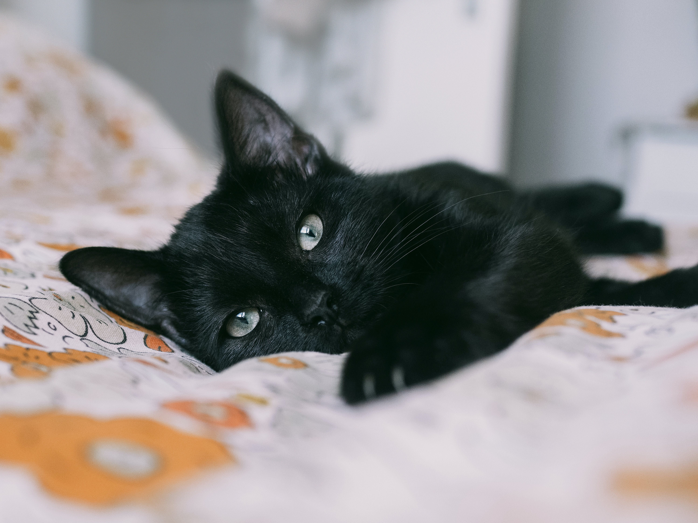
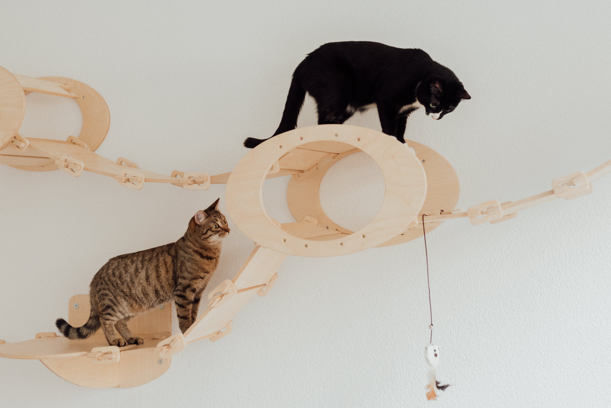
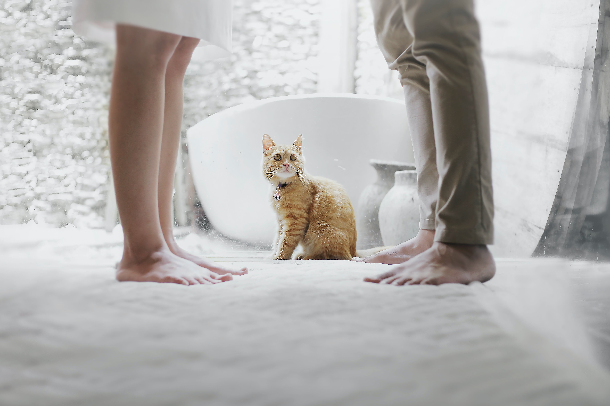

Bailey was a 3 month old Labrador dog. He was adopted by a family that had 3 children. They fell in love with Baley the lovely dog who became part of their big family. Bailey now is two years old and lives in a big house full of love. Adopters keep sending us pictures of him and we feel so good when we see our happy pets.
  Bella was an abandoned and very weak puppy. We found him on the street and took care of her for about a year. She grow up very quickly and was a beautiful and loving dog. She was adopted by a 25-year-old boy who lived in a house with a large garden. He had good economic opportunities that could meet her needs. Now Bella is 6 years old and she is Johnny's best friend, he says.
  A couple was interested in adopting a cat. When they came to visit us they saw Whiskers a sleek black cat and Jasper a playful cat. The couple embraced the joy of adopting both, creating a harmonious home where purrs echoed.
  